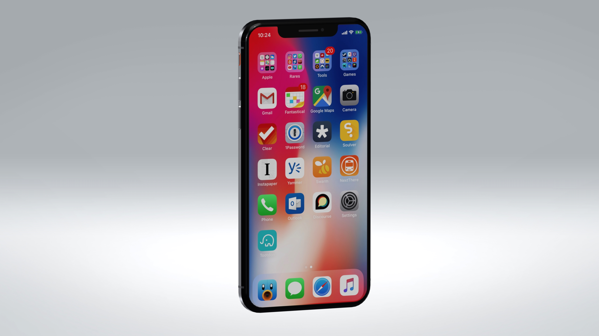

iPhone X: Photorealistic Rendering
This was a project where I explored consumer electronics design, and how multiple surface finish on the same face of a model (glass screen, metallic side rails) interact with lighting and surrounding environment. The modelling was relatively easy to prepare (it's a rectangle!), but some neat little trick during the rendering were fun to explore.Fun Fact: This is the rendering that 'wow'ed the most people since they can all relate to the real object. Of course, I didn't tell any of them how easy it was to model!
Design Tool: SolidWorks
Render Tool: Keyshot 6.0
